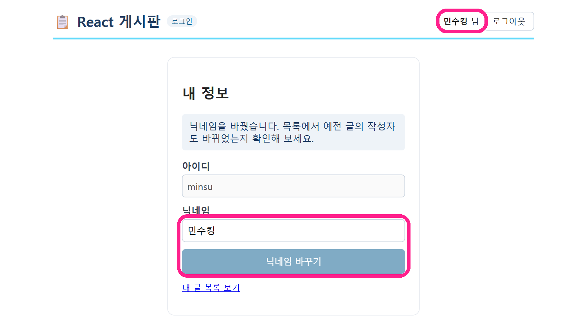

5장. React - 내 정보 화면
학습 목표
- 닉네임 바꾸기 API 를 부르는 함수와 화면을 더한다.
- 서버가 돌려준 새 토큰으로 바꿔 끼우는 이유를 React 쪽에서 확인한다.
5-1. 무엇을 더하나
| 파일 | 더한 것 |
|---|---|
api.js |
updateMe(nickname) → PUT /api/auth/me |
context/AuthContext.jsx |
changeNickname(nickname) → 새 토큰 저장 + user 바꾸기 |
새 pages/ProfilePage.jsx |
내 정보 화면 (/me) |
App.jsx |
/me 주소 (로그인한 사람만, ProtectedRoute) |
components/Layout.jsx, App.css |
머리글의 "닉네임 님" 을 누르면 /me 로 |
React 쪽은 MSA 와 상관없이 지금까지 배운 그대로다. 주소는 여전히 게이트웨이(8080) 하나다.
5-2. api.js 와 AuthContext
// api.js - (심화) 닉네임 바꾸기 → { access_token(새 토큰), user }
export const updateMe = (nickname) => request("/auth/me", { method: "PUT", body: { nickname } });
// AuthContext.jsx - (심화) 닉네임 바꾸기 - 서버가 돌려준 "새 토큰" 으로 바꿔 끼운다
// 옛 토큰 안에는 옛 닉네임이 들어 있어서, 그대로 쓰면 새 글도 옛 닉네임으로 저장된다.
const changeNickname = async (nickname) => {
const data = await api.updateMe(nickname);
api.tokenStore.set(data.access_token); // ← 새 토큰으로 교체
setUser(data.user); // ← 머리글의 "닉네임 님" 이 바로 바뀐다
};
changeNickname 을 Context 의 값에 함께 넣어 두면(value={{ user, login, logout, signup, changeNickname }}) 어느 화면에서든 useAuth() 로 꺼내 쓸 수 있다.
5-3. ProfilePage
📄 advanced/frontend/src/pages/ProfilePage.jsxGitHub 에서 보기
// ProfilePage.jsx - (심화) 내 정보 · 닉네임 바꾸기 ( /me )
//
// 이 파일이 보여 주는 것
// - 닉네임을 바꾸면 PUT /api/auth/me → 게이트웨이 → user-service (userdb 의 users 를 고친다)
// - 그러면 내가 예전에 쓴 글의 작성자도 바뀔까?
// Kafka 가 꺼져 있으면(app.kafka.enabled=false) → 안 바뀐다. posts.writer 는 복사본이기 때문
// Kafka 가 켜져 있으면 → user-service 가 보낸 소식을 post-service 가 받아 writer 를 고친다
// 목록으로 가서 직접 확인해 보자. (소식이 도착하는 데 1초쯤 걸릴 수 있다)
import { useState } from "react";
import { Link } from "react-router";
import { useAuth } from "../context/AuthContext";
function ProfilePage() {
const { user, changeNickname } = useAuth();
const [nickname, setNickname] = useState(user.nickname); // ProtectedRoute 안이라 user 는 항상 있다
const [message, setMessage] = useState(null);
const [error, setError] = useState(null);
const [busy, setBusy] = useState(false);
const handleSubmit = async (e) => {
e.preventDefault();
setBusy(true);
setError(null);
setMessage(null);
try {
await changeNickname(nickname.trim());
setMessage("닉네임을 바꿨습니다. 목록에서 예전 글의 작성자도 바뀌었는지 확인해 보세요.");
} catch (err) {
setError(err.message); // "닉네임을 입력하세요" 등
} finally {
setBusy(false);
}
};
return (
<form className="post-form auth-form" onSubmit={handleSubmit}>
<h2>내 정보</h2>
{message && <p className="info-box">{message}</p>}
{error && <p className="error">⚠️ {error}</p>}
<label>
아이디
<input value={user.username} disabled />
</label>
<label>
닉네임
<input value={nickname} onChange={(e) => setNickname(e.target.value)} maxLength={30} />
</label>
<button type="submit" className="primary wide" disabled={busy || !nickname.trim() || nickname === user.nickname}>
{busy ? "바꾸는 중..." : "닉네임 바꾸기"}
</button>
<p className="hint">
<Link to="/?mine=1">내 글 목록 보기</Link>
</p>
</form>
);
}
export default ProfilePage;
- 닉네임 입력 칸의 처음 값은 지금 닉네임(
user.nickname)이다. - 지금과 같은 값이거나 비어 있으면 바꾸기 단추를 막는다(
disabled). 쓸데없는 이벤트가 나가지 않게 하는 화면 쪽 배려다. - 오류 메시지(
닉네임을 입력하세요등)는 user-service 의{"detail": ...}를 그대로 보여 준다.
App.jsx 에는 /me 를 ProtectedRoute 로 감싸 더했고, Layout.jsx 에서는 머리글의 닉네임을 <Link to="/me"> 로 바꿨다.
5-4. 켜서 확인하기
[PS] 새 터미널에서 (처음 한 번만 npm install. 기초 과정의 frontend 가 아니라 advanced\frontend 다)
cd C:\study\react-spring-mas-postgresql\advanced\frontend # 심화용 React 폴더
npm install # 처음 한 번만: 라이브러리 받기
npm run dev # http://localhost:5173 (기초 과정의 React 가 켜져 있으면 먼저 Ctrl+C 로 끈다)
게이트웨이까지 켠 상태에서 http://localhost:5173 → 로그인 → 머리글의 닉네임을 누르면 내 정보 화면이 열린다. 닉네임을 바꾸고 닉네임 바꾸기를 누른다.

목록에서 예전 글의 작성자가 바뀌었는지는 6장에서 차근차근 확인한다.
정리
updateMe→PUT /api/auth/me,changeNickname이 새 토큰을 저장하고user를 바꾼다.- 내 정보 화면은
/me, 로그인한 사람만 들어온다. - React 는 게이트웨이 주소 하나만 알면 된다. Kafka 가 있는지도 모른다.
확인 문제
changeNickname에서api.tokenStore.set(data.access_token)을 빼면 어떻게 될까?- React 는 Kafka 를 알아야 하는가? 이유는?